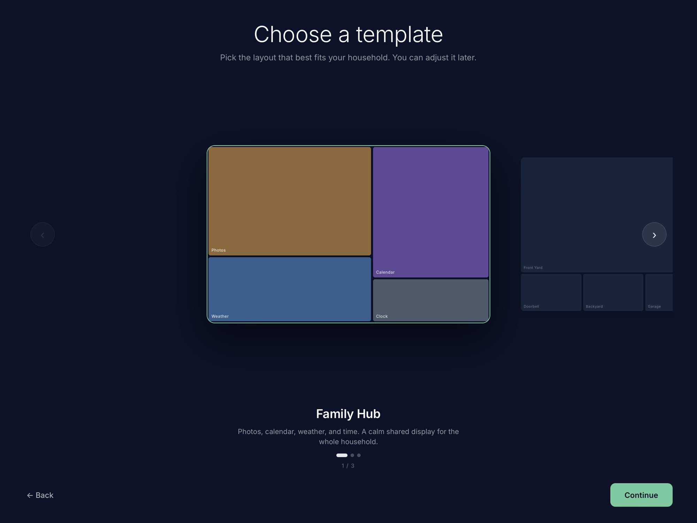
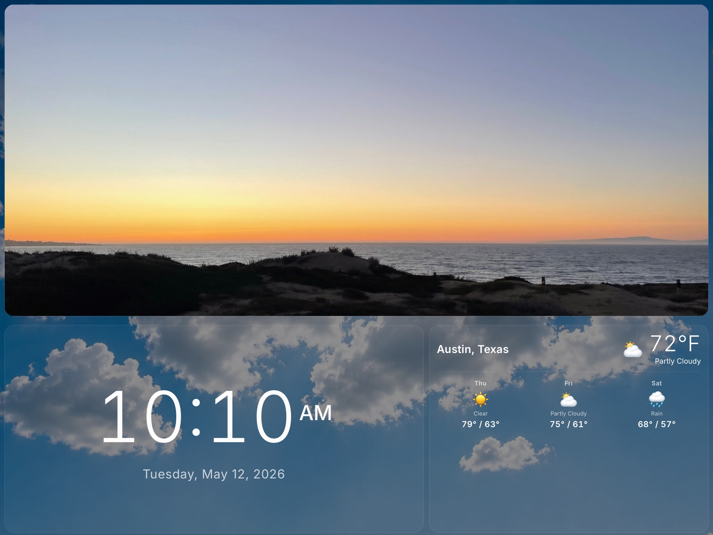

Perch Home
Home dashboard for iPad
Perch Home turns an iPad into an always-on household display for weather, calendars, photos, and guest Wi-Fi.



What it does
Weather and time
Current conditions, forecast details, and a readable household clock.
Calendar events
Apple Calendar and Google Calendar events shown at a glance.
Photo slideshows
Personal photo library slideshows that stay on the device.
Guest Wi-Fi
Visitor-friendly network details displayed where your household needs them.
Simple setup
Template-based onboarding for a focused always-on display.
Privacy
Perch Home is designed for personal household use. Most data stays on your device. Calendar, weather, analytics, and crash-reporting services are used only where needed to provide app features and improve reliability.
Read the privacy policy